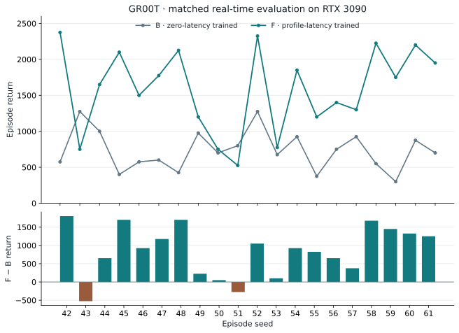
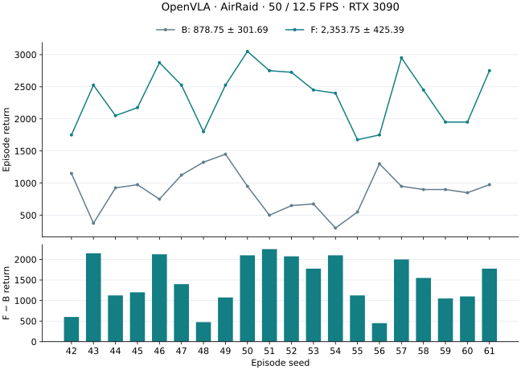
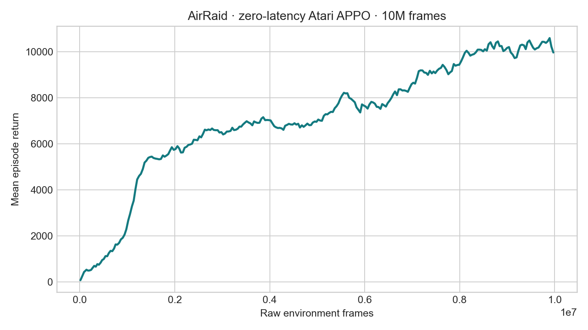
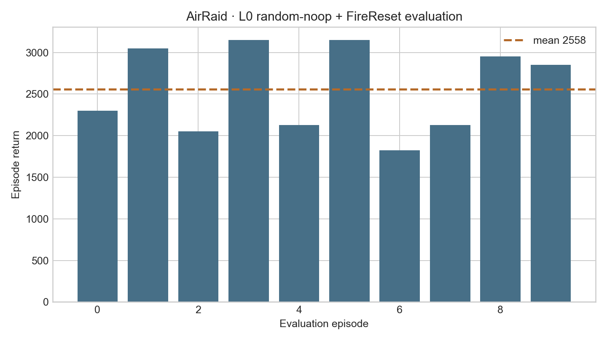
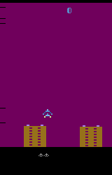
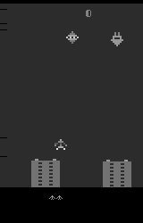

FireReset
A reset probe confirms FIRE and RIGHT are applied after random NOOP initialization.
latency-sensitive-bench / experiment report
OpenVLA and GR00T: completed training, measured real-time evaluation, and traceable experiment archives.
Results / verified 17 September 2026
Both models completed zero-latency and profile-latency training, followed by measured real-time B/F evaluation on RTX 3090. Checkpoints, raw demonstration data and curated scientific evidence are published on Hugging Face.
| Model / run | B · zero-trained | F · profile-trained | Mean gain |
|---|---|---|---|
| OpenVLA (QwenOFT)11 September | 878.75 ± 301.69 | 2,353.75 ± 425.39 | +1,475.00+167.85% |
| GR00T (QwenGR00T)17 September | 733.75 ± 268.71 | 1,586.25 ± 564.83 | +852.50+116.18% |
Returns are mean ± population SD. B/F describe the evaluation of zero-trained/profile-trained VLAs; both use measured inference latency, not zero or replayed latency. Gains are within-model descriptive comparisons from one training run. Different training recipes and realized latency distributions prevent a controlled cross-model ranking.
Native PAL AirRaid; six actions; a single 224×224 RGB frame; H1 with no action chunk and no state input. Target environment/observation rates are 50 / 12.5 FPS, random NOOP 30 plus FireReset, hold/FIFO scheduling and a 3,600-raw-frame cap. AirRaid retains this protocol; it is not part of the embodied tasks’ 5 FPS setting.
Machine-readable results · Publication index · Original adaptation record
Model 01 / GR00T · 17 September
The final profile model completed 5,000 updates and passed strict reload plus a real-sample forward check. F then completed all 20 real-time episodes with exit 0 at 09:40:26 UTC. Paired seeds give 18 wins, 0 ties and 2 losses against B; the mean improvement is 852.50 points.
| Checkpoint / stage | Execution | Episodes | Return mean ± SD | Mean raw steps |
|---|---|---|---|---|
| Zero VLA · L0 | Simulated, zero latency | 20 | 2,101.25 ± 667.01 | 3,265.25 |
| Zero VLA · B | 3090 real-time, measured | 20 | 733.75 ± 268.71 | 2,825.25 |
| Profile teacher · E | Simulated IID, one worker | 10 | 2,572.50 ± 259.43 | 3,600.00 |
| Profile VLA · F | 3090 real-time, measured | 20 | 1,586.25 ± 564.83 | 2,818.05 |

| Seed | B return | F return | F − B |
|---|---|---|---|
| 42 | 575 | 2,375 | +1,800 |
| 43 | 1,275 | 750 | -525 |
| 44 | 1,000 | 1,650 | +650 |
| 45 | 400 | 2,100 | +1,700 |
| 46 | 575 | 1,500 | +925 |
| 47 | 600 | 1,775 | +1,175 |
| 48 | 425 | 2,125 | +1,700 |
| 49 | 975 | 1,200 | +225 |
| 50 | 700 | 750 | +50 |
| 51 | 800 | 525 | -275 |
| 52 | 1,275 | 2,325 | +1,050 |
| 53 | 675 | 775 | +100 |
| 54 | 925 | 1,850 | +925 |
| 55 | 375 | 1,200 | +825 |
| 56 | 750 | 1,400 | +650 |
| 57 | 925 | 1,300 | +375 |
| 58 | 550 | 2,225 | +1,675 |
| 59 | 300 | 1,750 | +1,450 |
| 60 | 875 | 2,200 | +1,325 |
| 61 | 700 | 1,950 | +1,250 |
| Metric | B | F |
|---|---|---|
| Action-weighted latency mean / P95 | 82.19 / 95.14 ms | 78.40 / 85.81 ms |
| Mean of episode latency means | 83.29 ms | 78.45 ms |
| Dropped / total observation opportunities | 3,023 / 14,131 (21.39%) | 775 / 14,096 (5.50%) |
| Invalid / dropped actions | 0 / 0 | 0 / 0 |
| Actual environment FPS, episode mean | 48.29 | 48.27 |
| Episodes reaching the 3,600-frame cap | 7 / 20 | 7 / 20 |
Observation opportunities = submitted + dropped. The 50 FPS target is distinct from actual execution speed. B/F share the environment, scheduler, executor, seed block and horizon; the checkpoint and prompt key change (0 → 4). Since realized latency and drop rates also differ, the return gain is not an equal-latency isolated estimate. The teacher’s 2,500 data-selection gate is not a new VLA acceptance threshold.
Verified B/F comparison · F config, summaries, traces and completion receipts · B evidence
GR00T / Training and provenance
| Stage | Completed result | Evidence |
|---|---|---|
| Zero VLA | 5,000 updates; seed 42; global batch 64. Reused 100 L0 episodes, 81,000 train / 9,000 validation rows. | Model bundle |
| P · latency profile | 5 × 10 episodes on 3090; 25,491 canonical samples; 500 warmups excluded. Mean 81.49 ms, P95 97.82 ms. | Profile and traces |
| S / E · APPO teacher | 10,002,432 environment frames. Selected best: step 38,304 / 9,805,824 frames. E10: 7/10 above 2,500. | Training, selection and E |
| R / C · demonstrations | 100 accepted / 164 attempts; 90/10 episodes and 81,000/9,000 rows. Accepted returns strictly exceed 2,500. | Raw data and validation |
| V · profile VLA | Fresh initialization; 5,000 updates; exit 0. Final run: 03:51:49–08:08:37 UTC, 17 September. | Config and receipts |
| F · measured real-time | 20 episodes; seeds 42–61; 0 invalid or dropped actions. Completed and verified. | Final evaluation |
Both GR00T VLAs use Qwen3-VL-4B-Instruct with a DiT-B action head, 4 inference timesteps and 8 diffusion repeats. Training uses one H200, microbatch 16 × accumulation 4, seed 42, warmup 100, VLM/action learning rates 10⁻⁵ / 10⁻⁴, and 200 held-out batches every 500 updates. The profile model starts fresh rather than continuing the zero-latency VLA.
GR00T reuses the original H1 zero-latency data and preserves its episode split. Profile data use latency labels 4/5/6 raw frames; F prompt key 4 means 4 raw frames (80 ms), not task index 4. Inference latency is measured independently; no extra IID delay is added to F.
The canonical probe includes the first 12 attempts (7 accepted, 5 rejected); 10 later overrun attempts are excluded. Collection obtained 100 accepted episodes in 164 attempts without an enforced attempt cap. These deviations remain in the archive. The final r3 run followed a conservative r2 stop at update 136 for statistics metadata alignment; the tensor-action, no-state loader did not consume those statistics, so no tensor-target change is claimed.
Backbone revision: ebb281ec70b05090aa6165b016eac8ec08e71b17. Final profile checkpoint SHA256: 530ee1a1b62ccdec8ef77a0d1c639eb8c16782dd94d91b5e5444c162da0e58b2. Strict reload and finite output shape [1, 1, 6] establish bundle integrity; F establishes closed-loop real-time performance.
Model 02 / OpenVLA · 11 September
“OpenVLA” is the archive label for this project’s QwenOFT / Qwen3-VL-4B-Instruct discrete-action implementation. This run uses 5,000 updates and global batch 16. Its own measured profile and APPO teacher feed the profile-conditioned VLA.
| Stage | Execution | Episodes | Return mean ± SD |
|---|---|---|---|
| B · zero VLA | 3090 real-time | 20 | 878.75 ± 301.69 |
| E · profile teacher | Simulated IID | 10 | 3,242.50 ± 300.01 |
| F · profile VLA | 3090 real-time | 20 | 2,353.75 ± 425.39 |
B/F use seeds 42–61, measured latency, 50/12.5 FPS and the 3,600-frame cap. Mean return improves by 1,475.00 (+167.85%); cap-reaching episodes increase from 11/20 to 20/20. F latency is 58.12 ms mean / 58.96 ms P95, with one dropped observation and no invalid or dropped actions.
Canonical OpenVLA experiment archive · Zero model · Profile model
Historical L0/L2 simulated scores in the detailed record below belong to a separate evaluation cohort. They are not the real-time B/F values above. Original evidence links and earlier adaptation notes are retained.

01 / Adaptation
The agent inspects native ALE frames, action meanings, raw timing and reset behavior, then builds the observation and action wrappers. Small-model control uses stacked Atari observations; VLA training uses rendered RGB and the same six-action catalog.
ALE/AirRaid-v5, ALE 0.8.1, mode 1, difficulty 0.(250,160,3) uint8.noop_max=0.noop_max=30 plus FireReset; VLA rows contain one current RGB image and no context images.observation_stride = 50 / 12.5 = 4 raw frames · latency_raw_frames = 0
env:
name: gymnasium
task_name: air_raid
env_id: LatencyBench/AirRaid-v0
env_fps: 50
obs_fps: 12.5
frame_stack: 4
action_order: [noop, fire, right, left, rightfire, leftfire]
latency:
method: zero
evaluation:
noop_max: 30
fire_reset: true
deterministic: true
eval_episodes: 10
eval_max_steps: 3600A reset probe confirms FIRE and RIGHT are applied after random NOOP initialization.
Train and eval both expose (4,84,84) to the policy.
Train and eval both use obs_scale=255.
AirRaid, Gymnasium adapter, and Sample Factory integration tests pass together.
02 / Zero-latency small model training & evaluation
| Field | Value |
|---|---|
| Algorithm | APPO |
| Encoder | convnet_atari, ReLU |
| Parallelism | 16 workers × 8 envs, 2 worker splits |
| Rollout / batch | 32 / 1024 |
| Optimization | 4 epochs, 4 batches per epoch |
| Learning rate | 2.5e-4, linear decay |
| Entropy coefficient | 0.01 |
| Observation scale | 255 |
| Best training moving average | 10,593 |
Best checkpoint: outputs/examples/gymnasium_air_raid/checkpoints/gymnasium_air_raid_zero_latency_atari_official_fast_10m/checkpoint_p0/best_000038656_9895936_reward_10593.000.pth.

| Episode | Seed | Return | Raw steps |
|---|---|---|---|
| 0 | 104729 | 2,300 | 3,600 |
| 1 | 104730 | 3,050 | 3,600 |
| 2 | 104731 | 2,050 | 3,600 |
| 3 | 104732 | 3,150 | 3,600 |
| 4 | 104733 | 2,125 | 3,600 |
| 5 | 104734 | 3,150 | 3,600 |
| 6 | 104735 | 1,825 | 3,600 |
| 7 | 104736 | 2,125 | 3,600 |
| 8 | 104737 | 2,950 | 3,600 |
| 9 | 104738 | 2,850 | 3,600 |
Mean return 2,557.5; standard deviation 491.81; mean length 3,600 raw frames.

03 / Zero-latency VLA training & evaluation
context_window=0 and one current 224×224 RGB image.discrete_ce, batch 16×1, 5,000 steps.| Latency | Mean return | Std | Mean length | Full episodes |
|---|---|---|---|---|
| L0 | 2,000.0 | 706.13 | 3,106.9 | 15 / 20 |
| L2 | 681.25 | 277.92 | 2,449.75 | 2 / 20 |

Hugging Face teacher dataset · W&B training run
config · log · evaluation
metadata · filter report · manifest · mixture


noop_max=0; the new teacher dataset and all reported evaluation use random-noop 30 plus FireReset.04 / Profiling
This experiment : environment / observation FPS 50 / 12.5, original zero-latency QwenOFT, 224×224 input, one inference worker. Five sessions of ten episodes, each capped at 60 seconds with native termination. The original observation stride is preserved.
Measurement complete: five sessions × ten episodes, exit 0. 35,908 admitted / 35,908 attempted observations; 0 capacity drops. Complete profile uploaded; all 126 files verified. The measured profile is reused for latency-conditioned training. Run ledger and evidence.
| Mean ± std | P50 | P95 | P99 | Maximum |
|---|---|---|---|---|
| 58.41 ± 0.71 ms | 58.58 ms | 59.03 ms | 59.97 ms | 76.16 ms |
Source run the archived run. Canonical observation-to-action samples exclude warmup; capacity drops do not receive fabricated latency values. Measured summary · Profile manifest.
05 / Baseline VLA evaluation
Evaluate the zero-latency VLA on RTX 3090 with measured realtime latency, 20 episodes, seeds 42–61, 50/12.5 FPS and a 3,600-raw-frame cap. It reaches the cap in 11/20 episodes; there is one observation drop and no invalid or dropped actions.
| Stage | Episodes | Return mean ± std | Mean raw steps | Evidence |
|---|---|---|---|---|
| B | 20 | 878.75 ± 301.69 | 3,092.00 | Summary |
06 / Profile-latency small model training & evaluation
| Stage | Episodes | Return mean ± std | Mean steps | Evidence |
|---|---|---|---|---|
| E | 10 | 3,242.50 ± 300.01 | 3,600.00 | Summary |
S completed 10,006,528 frames and its selected best checkpoint is uploaded and hash-verified: small-model bundle. Training uses action-delay IID; E additionally simulates one worker's occupancy. Evaluation and rollout preserve random NOOP resets and FireReset; training preserves its original NOOP-free reset.
E completed with all ten episodes above the original 2,500 return gate.
07 / Profile-latency VLA training & evaluation
R/C completed 100 accepted episodes and 90,000 rows (81,000 train / 9,000 validation). Actual replay returns all exceed 2,500 (minimum 2,575; mean 3,186.5), and each episode matches its probe seed, split, length and return. VLA training completed all 5,000 steps with exit 0 (batch 16, accumulation 1). Final train loss is 0.82926 and held-out validation loss is 0.68812. The final model bundle is uploaded with all 22 files verified; the matched realtime evaluation completed 20 episodes on the 3090. Online W&B is finished. The raw data are archived in Standard-Pipeline; converted data are generated on the training server. The original raw/conversion publication audit verified 121 files. Stage ledger and frozen source contract.
| Training condition | Evaluation condition | Episodes | Return mean ± std | Mean raw steps | Latency mean / P95 | Drops obs / actions / invalid | Status / evidence |
|---|---|---|---|---|---|---|---|
| Zero-latency VLA | 3090 measured real-time, 50/12.5 FPS | 20 | 878.75 ± 301.69 | 3,092 | 58.45 / 59.04 ms | 1 / 0 / 0 | DONE · B |
| Profile-latency small model | Simulated IID, one worker pool, 50/12.5 FPS | 10 | 3,242.50 ± 300.01 | 3,600 | 58.40 / 59.03 ms | 0 / 0 / 0 | DONE · E |
| Profile-latency VLA | 3090 measured real-time, 50/12.5 FPS | 20 | 2,353.75 ± 425.39 | 3,600 | 58.12 / 58.96 ms | 1 / 0 / 0 | DONE · F |
Matched realtime comparison: mean return increased by 1,475.00 points (+167.85%) from 878.75 to 2,353.75. Episodes reaching the 3,600-frame evaluation cap increased from 11/20 to 20/20. F admitted 17,999/18,000 observations with one drop and no dropped or invalid actions. This is a descriptive comparison from one training run; the small-model E result uses simulated latency and is a separate evaluation condition. Comparison evidence.
F uses the new bundle's trained prompt key 3 (60 ms); its observed latency is measured independently. The 3,600-frame limit is the evaluation cap, while the original ALE limit remains unchanged.
Publication / fixed revisions
The OpenVLA archive categories are retained: training configs and completion receipts; P/B/E/F summaries and scientific traces; warmup records; raw demonstrations with validation; and paired comparisons. Model weights live in the model repository; experimental evidence lives in the dataset repository.
| Artifact | GR00T | OpenVLA |
|---|---|---|
| Zero / profile checkpoints | Zero / Profile | Zero / Profile |
| Raw demonstrations | Zero / Profile | Zero / Profile |
| Config, evaluation and provenance | Complete experiment | Complete experiment |
| Local publication receipts | Finalization · 46 files verified | Historical archive verification |
GR00T finalization publishes 46 added or updated files (82.3 MB), all verified by remote size and content hash. It preserves existing P/B traces and raw datasets. Source/output manifest · Finalization checksums · Curation and reconstruction notes.
Scientific fields are preserved; machine paths in configs are replaced with portable placeholders. Raw operational logs, optimizer state, duplicate latency traces, intermediate checkpoints and converted datasets are not republished. Local files contain the report, display media, compact results and publication receipts; bulk evidence is linked to fixed HF revisions.